AI Pathway - Visual Changes Walkthrough
17 visual changes covering Luda Apr 15 + Apr 28 feedback, Vivek Apr 29 critique, and the new Implementation Task workflow. Click any screenshot to enlarge.
Homepage simplified
Luda Apr 15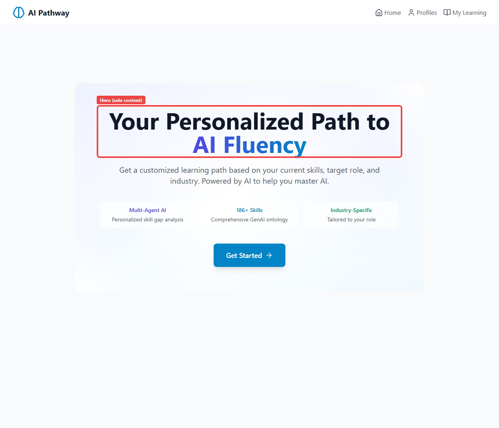
What was changed
Removed 'How It Works' section and 'Ready to start your AI learning journey?' CTA block.
Why
Per Luda Apr 15: page should fit on a single screen.
Files modified
frontend/src/pages/HomePage.tsx
Profiles page copy update
Luda Apr 15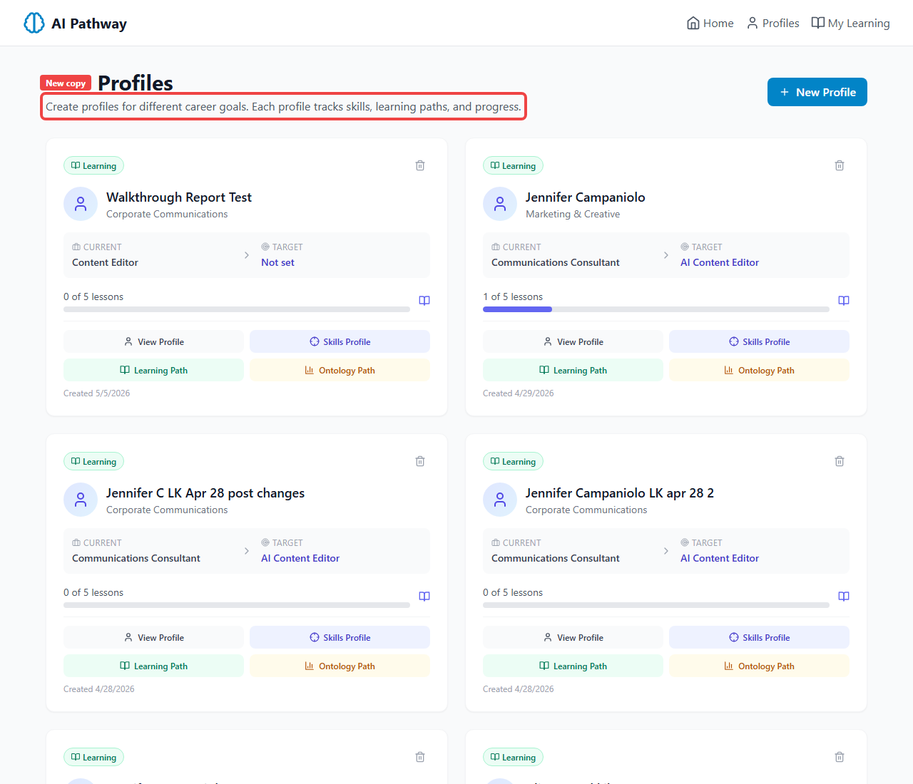
What was changed
Subhead changed from 'Create and manage learner profiles' to 'Create profiles for different career goals'.
Why
Per Luda Apr 15: language tailored for individuals creating multiple profiles for themselves.
Files modified
frontend/src/pages/ProfileSelectionPage.tsx
Skill selection + self-assessment merged
Luda Apr 15
What was changed
Combined two previously separate pages (skill selection, then self-assessment) into one unified page. When a skill is selected, the proficiency rating appears inline below it.
Why
Per Luda Apr 15: reduce step count and let user adjust skills + ratings in one view.
Files modified
frontend/src/pages/AnalysisPage.tsxfrontend/src/components/SelfAssessment.tsx
Hover tooltip with ontology description on skill name
Vivek Apr 29 (NEW today)
What was changed
Skill names now have a dotted underline + cursor:help. Hovering shows the canonical ontology description and skill_id in a dark tooltip.
Why
Per Vivek Apr 29 (confirmed Agreed): users shouldn't have to guess what a skill means. Show the authoritative ontology definition on hover.
Files modified
frontend/src/components/SelfAssessment.tsxfrontend/src/pages/AnalysisPage.tsx
Detected Role -> Targeted Role rename
Luda Apr 15
What was changed
Label 'Detected role' renamed to 'Targeted role' throughout the tool.
Why
Per Luda Apr 15: 'Targeted' is more accurate - the user is selecting a target, not having a role 'detected'.
Files modified
frontend/src/components/profile/TargetGoalPanel.tsx
End-of-page messaging when skills match target
Luda Apr 28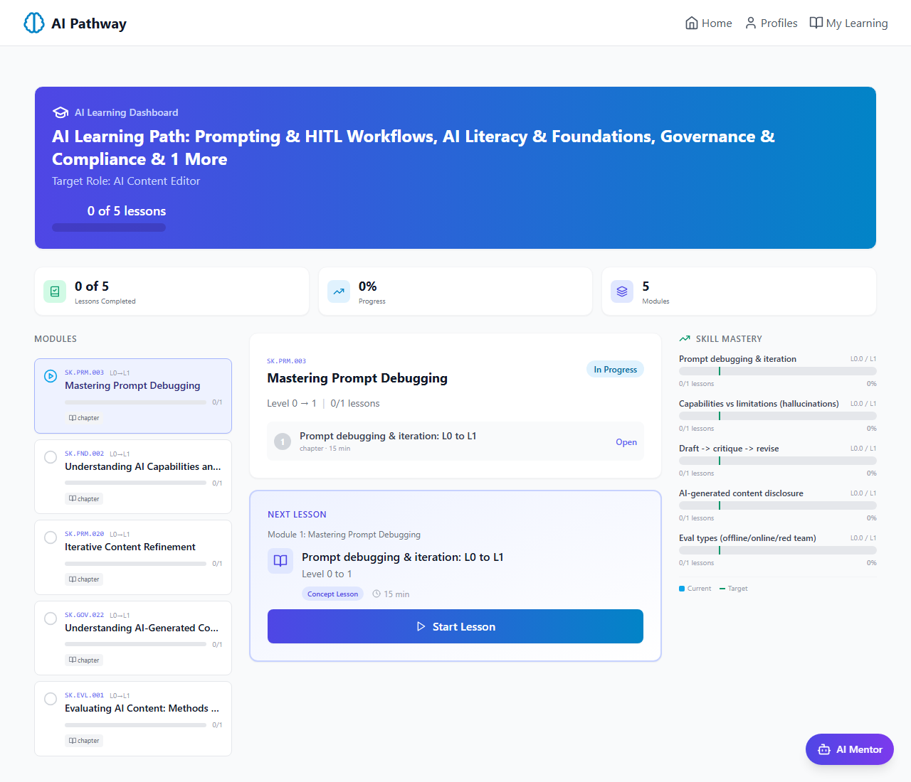
What was changed
Changed messaging from 'we will proceed with the remaining X skills' to 'we will add other relevant skills to build a learning path consisting of 5 chapters'.
Why
Per Luda Apr 28: clarify that the system backfills with new skills rather than just dropping the matched ones.
Files modified
frontend/src/pages/AnalysisPage.tsx
Learning dashboard auto-activates (no Ready to Start gate)
Luda Apr 28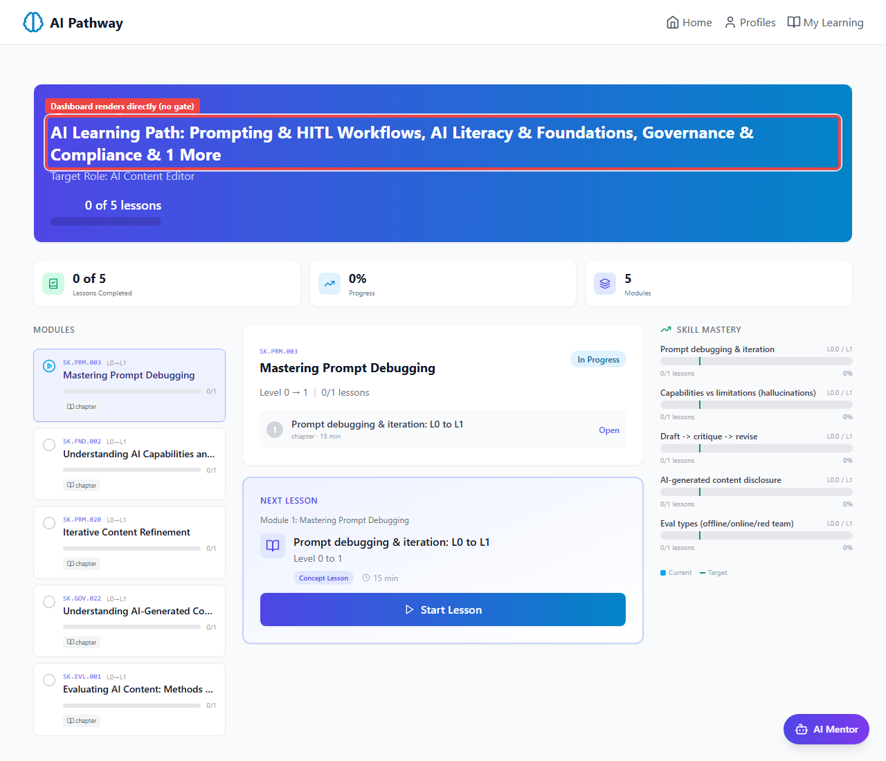
What was changed
Removed 'Ready to Start Learning?' confirmation page that previously appeared between skill review and the dashboard. Path now auto-activates on load.
Why
Per Luda Apr 28: the gate page was duplicative of the skill review confirmation.
Files modified
frontend/src/pages/LearningDashboardPage.tsx
Your Journey Roadmap page removed
Luda Apr 28
What was changed
Removed the entire 'Your Journey Roadmap' page that previously appeared between skill review and the learning dashboard.
Why
Per Luda Apr 28: the roadmap page was duplicative - same info already shown on the skill review page.
Files modified
frontend/src/pages/AnalysisPage.tsx
Chapter title uses ontology canonical name
Vivek Apr 29 (NEW today)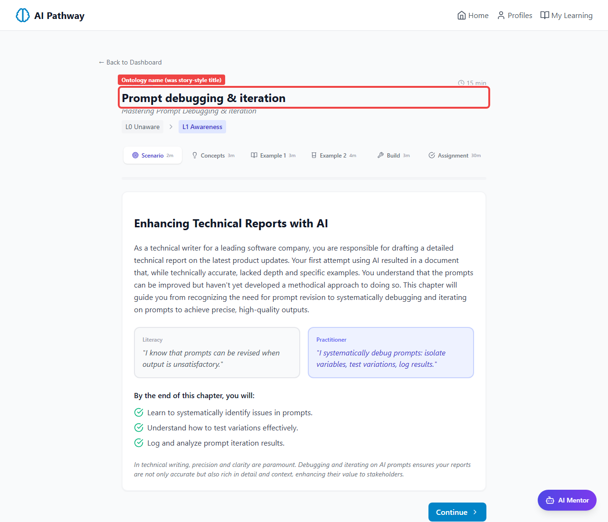
What was changed
Chapter title now displays the ontology canonical skill name (e.g. 'Prompt debugging & iteration') instead of the LLM-generated story title (e.g. 'Iterating on Prompts: From Literacy to Practitioner').
Why
Per Vivek Apr 29 (confirmed Agreed) on Luda's request: skills should be named consistently using ontology names throughout the tool.
Files modified
frontend/src/components/chapter/ChapterRenderer.tsx
Concepts section with mnemonic + pull_quote
Vivek depth fix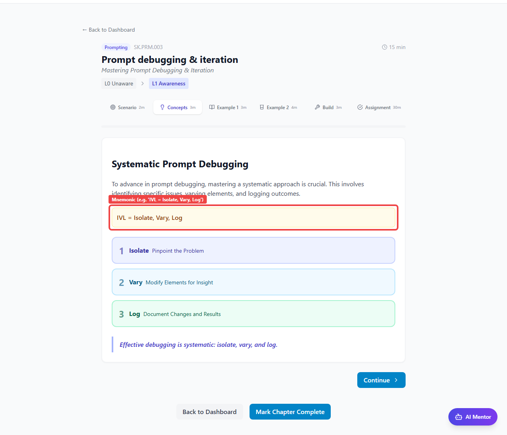
What was changed
Concepts section now requires a mnemonic field (e.g. 'IVL'), a pull_quote (single memorable sentence), and 2-4 concept cards each with identifier, word, headline, body, analogy, color_role.
Why
Per Vivek's depth spec: chapters lacked structural depth. Mnemonic + pull_quote help retention.
Files modified
backend/app/data/chapter-generator-prompt.mdbackend/app/agents/chapter_generator.py
Example 1 with 3-step structure (diagnosis_checklist / prompt_variant / log_entry)
Vivek depth fix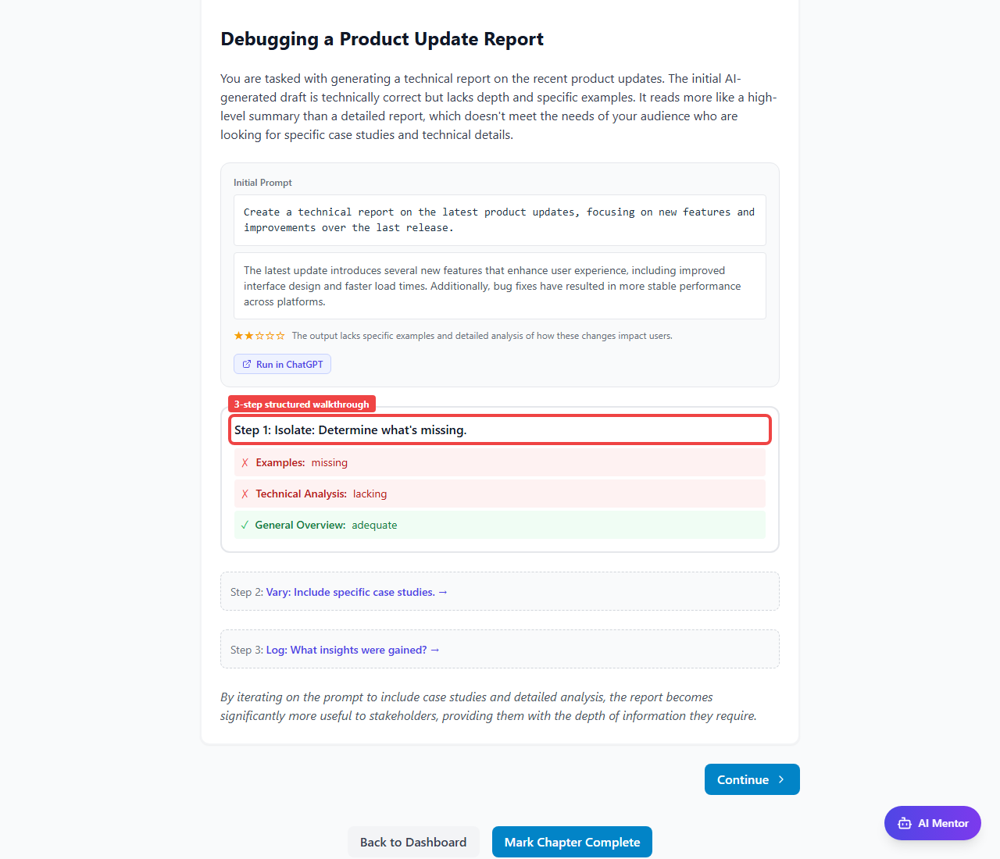
What was changed
Example 1 now requires a steps array with EXACTLY 3 entries: (1) diagnosis_checklist with broken/clear status flags, (2) prompt_variant ref, (3) log_entry table with key/value pairs.
Why
Per Vivek's spec: Example 1 should walk learner through the diagnostic process, not just show a prompt and result.
Files modified
backend/app/agents/chapter_generator.pybackend/app/data/chapter-generator-prompt.mdfrontend/src/components/chapter/ChapterRenderer.tsx
Example 2 A/B comparison
Vivek depth fix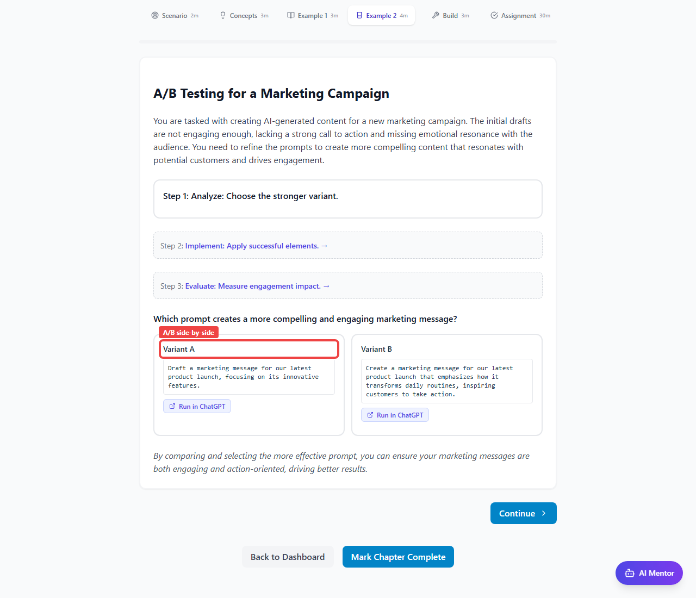
What was changed
Example 2 must have a comparison object with test_question, exactly 2 variants (id A, id B) with full prompt/output/rating/why, and a takeaway.
Why
Per Vivek's spec: Example 2 demonstrates the target-level skill (A/B testing) by example.
Files modified
backend/app/agents/chapter_generator.pybackend/app/data/chapter-generator-prompt.md
Build Your Agent section
Vivek spec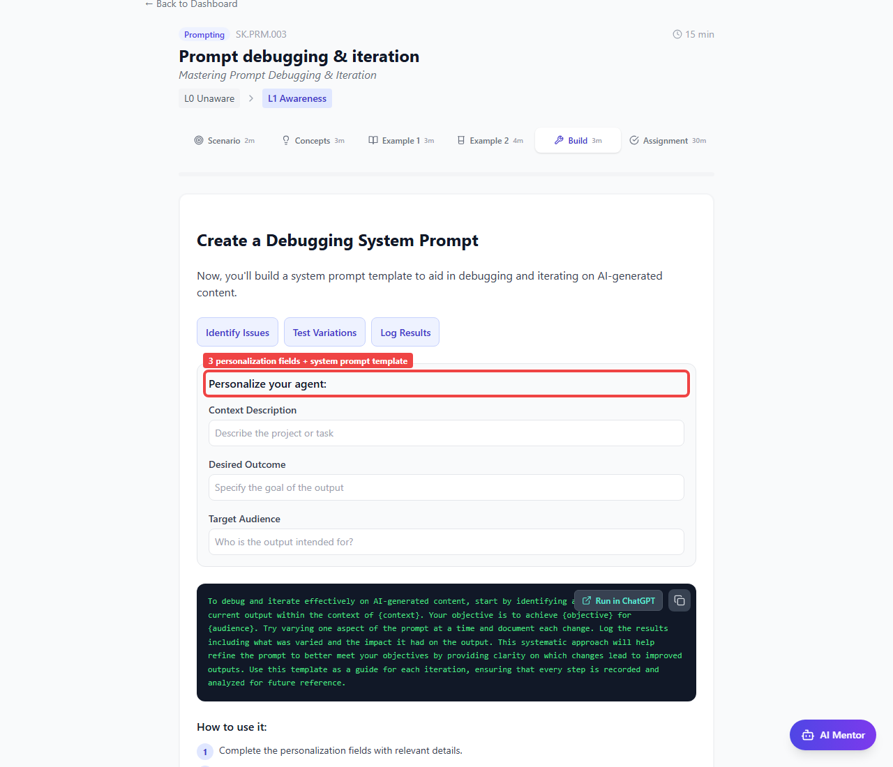
What was changed
Agent Build section requires: 3 capability_chips, 3 personalization_fields, system_prompt_template, usage_steps, and final_affirmation tying back to the rubric.
Why
Per Vivek's spec: each chapter ends with a takeaway artifact the learner can use the same day.
Files modified
backend/app/agents/chapter_generator.pyfrontend/src/components/chapter/ChapterRenderer.tsx
Try-in-LLM buttons (Run in ChatGPT / Claude)
Vivek Apr 29 (NEW)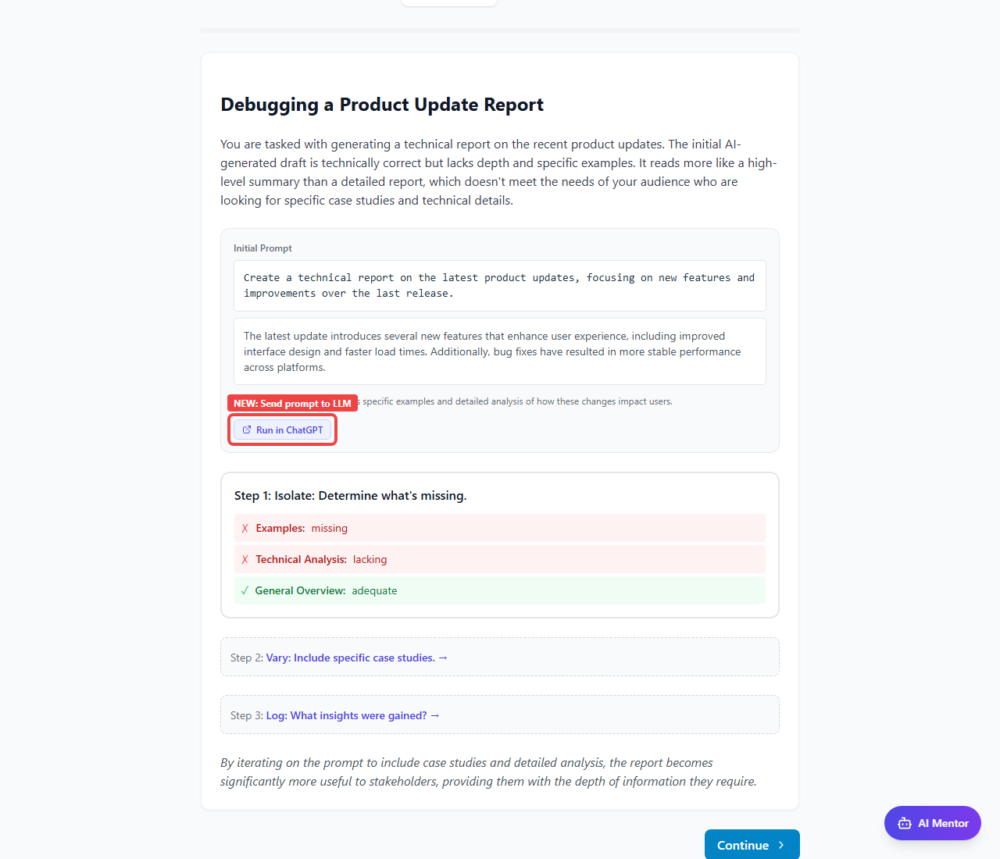
What was changed
Added 'Run in ChatGPT' / 'Run in Claude' buttons next to every prompt in the chapter: original_prompt, iterated_prompt, A/B variants, and the interpolated agent build template.
Why
Per Vivek Apr 29: 'I also liked aspects of your previous build especially around giving links to try out the prompts in chatgpt or claude.'
Files modified
frontend/src/components/chapter/ChapterRenderer.tsx
Implementation Task as 6th section (NEW)
User Apr 30 (NEW)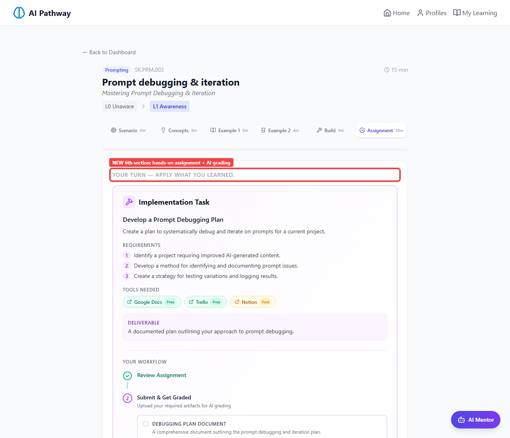
What was changed
Brought back the Implementation Task assignment workflow as a 6th chapter section. Includes title, description, requirements, deliverable, tools, evidence_requirements (file uploads). Submit & Get Graded uses existing AI grading endpoint.
Why
Per user's Apr 30 request: the assignment functionality from the old multi-lesson format was missing.
Files modified
backend/app/agents/chapter_generator.pybackend/app/data/chapter-generator-prompt.mdfrontend/src/components/chapter/ChapterRenderer.tsxfrontend/src/components/learning/ImplementationTaskCard.tsx
Deterministic skill ordering between runs
Luda Apr 28
What was changed
Set profile_analyzer LLM call to temperature=0. Verified across 20 consecutive runs - identical top 5 every time.
Why
Per Luda Apr 28: she ran Jennifer C twice and got different top 5 skills.
Files modified
backend/app/agents/profile_analyzer.py